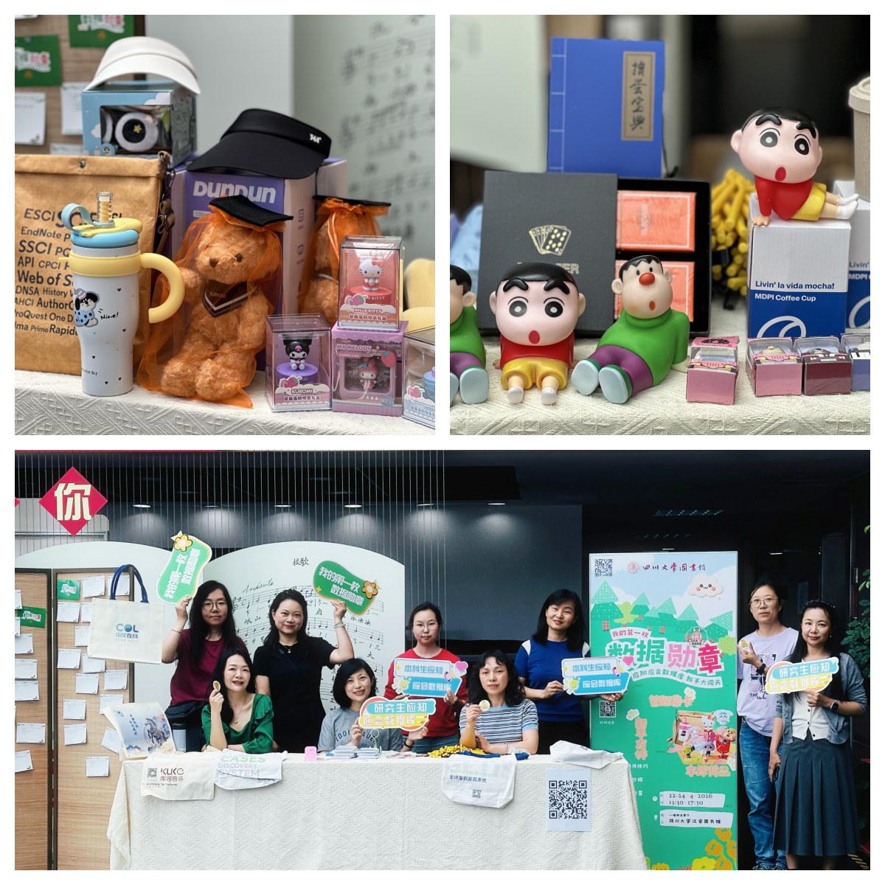

学院通知 · 科研创新
数智赋能、精准服务、协同育人：“数据勋章” 点亮资源与师生的连接
发布时间：2026-04-28 13:50:45
2026年4月22日至24日，四川大学图书馆在江安校区成功举办“我的第一枚数据勋章——应知应会数据库新手大闯关”趣味问答活动。本次活动作为“书香川大”第二十一届阅读文化节及图书馆数智赋能学习创新系列活动的重要组成部分，以本科生和研究生应知应会数据库为基础，通过趣味化、互动化的形式，搭建起学术资源与青年学子之间的桥梁，吸引了1300余人次参与，约600名同学获得奖品，现场学术氛围与互动热情持续高涨。 活动紧扣“数智赋能”主题，精心设计了近百道兼具知识性与趣味性的题目，内容涵盖数据库使用技巧、资源检索妙招及冷门知识彩蛋，既考验同学们的信息素养，又传递实用学术技能。为强化专业指导，资源建设中心与信息技术中心的老师们在活动现场，与同学们开展一对一互动：老师们现场演示数据库操作技巧，详细介绍特色资源功能，耐心解答同学们在使用中遇到的疑问，将枯燥的资源知识转化为生动的实践指导。此外，为推广数据库新增的AI工具，题目特别融入AI辅助学术的前沿议题，不少同学在答题后主动与馆员围绕“AI如何提升文献检索效率”“AI在学术写作中的边界”等问题展开深入讨论，展现出青年学子对学术创新的积极探索。 为避免活动停留于“答题领奖品”的表层互动，资源建设中心同步设计了需求调研问卷，聚焦同学们的真实科研场景，设置“常用中/外文库”“期望的数据库帮助方式”等开放式与封闭式问题，收集来自一线的真实反馈。这些调研数据将成为图书馆后续优化资源配置、设计分层培训课程、提升智慧服务水平的重要依据，推动服务从“被动响应”向“主动精准”转变。 本次活动的成功举办，是四川大学图书馆践行“数智赋能、精准服务、协同育人”理念的生动实践。在数字时代，图书馆的核心价值不仅在于资源的积累，更在于搭建资源与用户之间的深度连接桥梁。未来，图书馆将持续以资源服务为载体、以技术赋能为抓手、以协同促进成长，让知识服务深度融入师生的学术生活，为学校人才培养与科研创新提供坚实而温暖的支持，助力“书香川大”建设迈向新高度。 文字：杨靖 刘莹 图片：马梦灵
